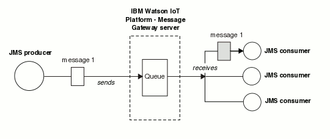

Point-to-point messaging
In point-to-point messaging, JMS producers and consumers exchange messages by using a destination which is called a queue.
Point-to-point messaging is available for JMS applications only. JMS producers send messages to the queue, and JMS consumers receive messages from that queue. One, or many producers can send messages to a queue. One, or many consumers can access that queue. However, any message on that queue can be received by only one consumer. A consumer can receive a message regardless of whether it was available when that message is received by the queue.
Use point-to-point messaging when you want to ensure that a message is received by only one consumer application.
An example of the point-to-point model is shown in the following diagram. A JMS producer sends a message to a queue on Eclipse Amlen. The message is received by only one of the three connected JMS consumer applications.
Messages on a queue are ordered based upon the order in which they are received by that queue. JMS consumers can choose to receive a subset of these messages by using a message selector. Java™ clients can view messages on a queue by using a queue browser. A queue browser does not remove messages from the queue.
An alternative messaging style that you can use is publish/subscribe messaging. Publish⁄subscribe messaging is available for MQTT and JMS applications. Use publish⁄subscribe messaging when you want the same message to be received by more than one application. For more information about publish/subscribe messaging, see Publish/subscribe messaging.